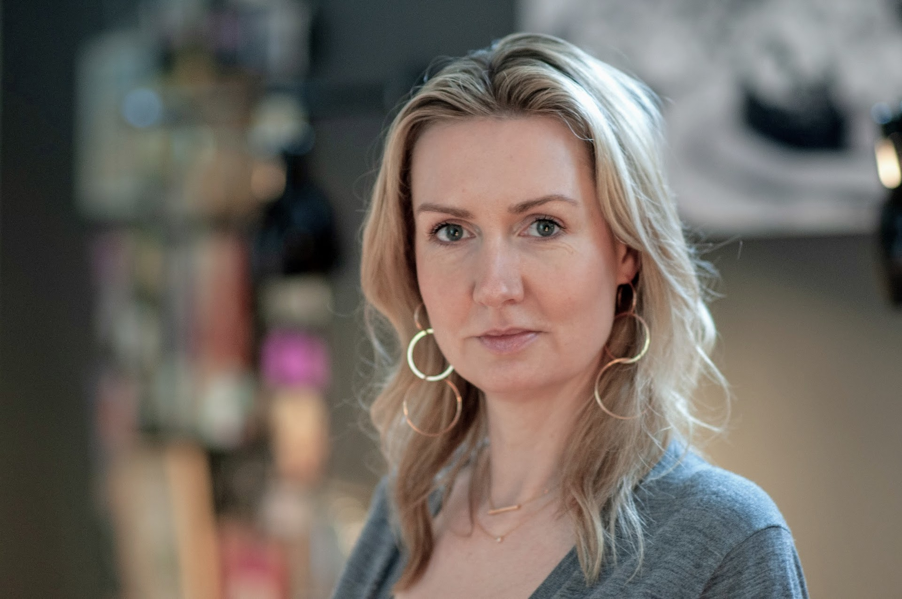

Wie wird es Zuhause noch gemütlicher? Welchen Einfluss haben Farben, und wie findet man den perfekten Ton? Seit rund 15 Jahren beschäftige ich mich täglich mit Einrichtungsproblemen und deren Lösungen. Nicht nur weil es mein Beruf ist, sondern weil ich mich leidenschaftlich gern mit diesen Themen auseinandersetze. Ich konzipiere, recherchiere und texte Einrichtungsstrecken, Trendseiten, Wohn- und Reisereportagen, Porträts sowie DIY- und Gartenthemen. Ich verfüge über ein großes Netzwerk aus Architekten, Inneneinrichtern, Möbelherstellern und Designern und finde schnell den richtigen Ansprechpartner für Interviews. Auf Designmessen und Reisen entdecke ich Trends, angesagte Hotspots, neue Hotels und Shops sowie junge Talente. Als Lifestyle Expertin bin ich dem Zeitgeist immer auf der Spur und neugierig auf die Geschichten dahinter. Neben schöner Texte biete ich ein ausgeprägtes optisches Gespür und organisiere und betreue Interieur-Produktionen und Reportagen für Print und TV.
Schon während meines Journalistik-Studiums in Münster und Hamburg interessierte ich mich für Interieurthemen. Als Volontärin und Fernsehredakteurin bei Companions TV konnte ich meine Leidenschaft zum Beruf machen. Für das NDR-Magazin "Wohnträume" betreute und organisierte ich eigenständig Beiträge, schrieb Drehbücher und führte Regie – insgesamt wirkte ich an über 60 Wohnreportagen mit. Danach wechselt ich in den Printbereich und arbeitete 10 Jahre bei Deco&Style Experts (http://www.decoundstyle.de). Die Dienstleistungs-Redaktion produziert für die einzelnen Zeitschriften-Redaktionen bei Bauer Media die Wohn- und Dekoseiten. Zu meinen Aufgabenbereichen gehörten neben der Konzeption der Seiten und das Texten auch die Planung und Abnahme von Fotoproduktionen im Studio oder on Location. Das Realisieren von Kundenwünschen und entsprechende Briefing sowie Leiten von Stylisten und Fotografen gehörten für mich zum Alltag. Entwicklungsredaktion und Seit meiner kaufmännischen Ausbildung bin ich es gewohnt, strukturiert zu arbeiten. 2.5 Jahre Wohnidee